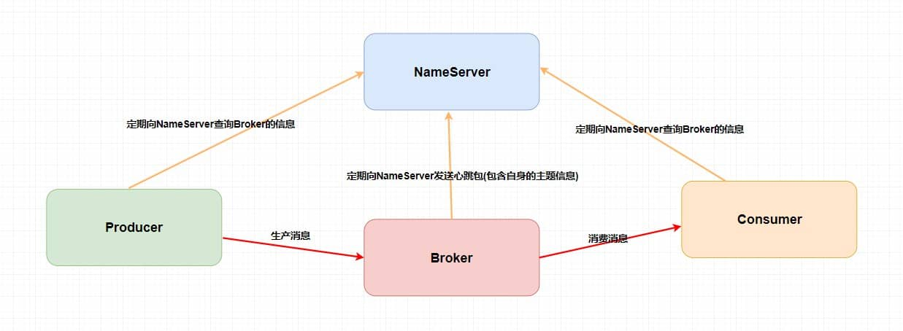
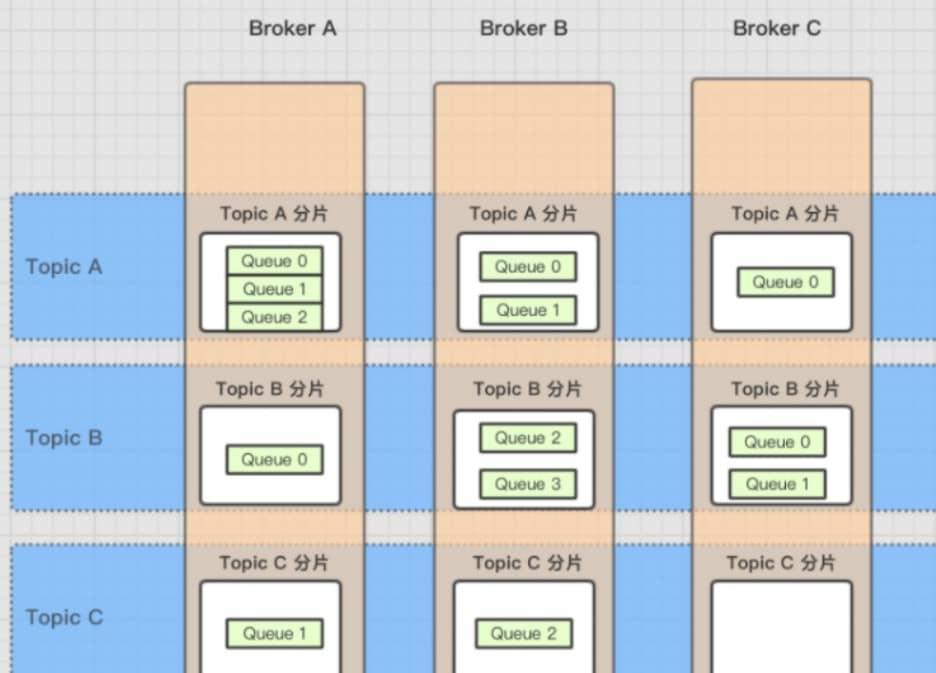

摘要：阿里开源的一个队列模型的消息中间件，有高性能、高吞吐量、高可靠、高实时、分布式的特点。为了解决 Kafka 的缺点：在低延迟和高可靠性方面的表现不能满足要求。
[TOC]
阿里开源的一个队列模型的消息中间件，有高性能、高吞吐量、高可靠、高实时、分布式的特点。
淘宝中间件团队在对 Kafka 做过充分 Review 之后， Kafka 无限消息堆积，高效的持久化速度吸引了我们。
Kafka 缺点：在低延迟和高可靠性方面的表现不能满足要求。
但是，同时发现这个消息系统主要定位于日志传输，对于使用在淘宝交易、订单、充值等场景下还有诸多特性不满足，为此我们重新用 Java 语言编写了 RocketMQ ，定位于非日志的可靠消息传输（日志场景也 OK）。
目前 RocketMQ 在阿里集团被广泛应用在订单，交易，充值，流计算，消息推送，日志流式处理， binglog 分发等场景。
这个开发者指南旨在帮助您快速了解并使用 Apache RocketMQ
概念(Concept)：介绍RocketMQ的基本概念模型。
特性(Features)：介绍RocketMQ实现的功能特性。
架构(Architecture)：介绍RocketMQ部署架构和技术架构。
设计原理(Design)：介绍RocketMQ关键机制的设计原理，主要包括消息存储、通信机制、消息过滤、负载均衡、事务消息等。
Local 模式和 Cluster 模式).集群搭建
在 conf 目录下，RocketMQ 提供了多种 Broker 的配置文件：
broker.conf ：单主，异步刷盘。2m/ ：双主，异步刷盘。2m-2s-async/ ：两主两从，异步复制，异步刷盘。2m-2s-sync/ ：两主两从，同步复制，异步刷盘。dledger/ ：Dledger 集群，至少三节点。见 RocketMQ 样例文档。
快速入门
定时消息
消费重试
消费异常处理机制
广播消费
顺序消息
消息过滤
事务消息
监控端点
更多的配置项信息
接入阿里云的消息队列 RocketMQ
MessageTag）：细粒度消息分类属性，可以在主题层级之下做消息类型的细分。MessageQueueOffset）：消息是按到达服务端的先后顺序存储在指定主题的多个队列中，每条消息在队列中都有一个唯一的Long类型坐标，即消息位点。ConsumerOffset）：一条消息被某个消费者消费完成后不会立即从队列中删除，RocketMQ 会基于每个消费者分组记录消费过的最新一条消息的位点，即消费位点。消息有序：指的是一类消息消费时，能按照发送的顺序来消费。
顺序消息分为全局顺序消息与分区顺序消息，全局顺序是指某个Topic下的所有消息都要保证顺序；部分顺序消息只要保证每一组消息被顺序消费即可。
事务消息（Transactional Message）：指应用本地事务和发送消息操作可以被定义到全局事务中，要么同时成功，要么同时失败。
定时消息（延迟队列）：指消息发送到broker后，不会立即被消费，等待特定时间投递给真正的topic。
1s 5s 10s 30s 1m 2m 3m 4m 5m 6m 7m 8m 9m 10m 20m 30m 1h 2h”，18个level。可以配置自定义messageDelayLevel。level有以下三种情况：
定时消息会暂存在名为SCHEDULE_TOPIC_XXXX的topic中，并根据delayTimeLevel存入特定的queue，queueId = delayTimeLevel – 1，即一个queue只存相同延迟的消息，保证具有相同发送延迟的消息能够顺序消费。broker会调度地消费SCHEDULE_TOPIC_XXXX，将消息写入真实的topic。
需要注意的是，定时消息会在第一次写入和调度写入真实topic时都会计数，因此发送数量、tps都会变高。
消息的发布是指某个生产者向某个topic发送消息；消息的订阅是指某个消费者关注了某个topic中带有某些tag的消息，进而从该topic消费数据。
RocketMQ的消费者可以根据Tag进行消息过滤，也支持自定义属性过滤。消息过滤目前是在Broker端实现的.
RocketMQ支持消息的高可靠，影响消息可靠性的几种情况：
1)、2)、3)、4) 四种情况都属于硬件资源可立即恢复情况，RocketMQ在这四种情况下能保证消息不丢，或者丢失少量数据（依赖刷盘方式是同步还是异步）。
5)、6)属于单点故障，且无法恢复，一旦发生，在此单点上的消息全部丢失。RocketMQ在这两种情况下，通过异步复制，可保证99%的消息不丢，但是仍然会有极少量的消息可能丢失。
至少一次(At least Once)指每个消息必须投递一次。Consumer先Pull消息到本地，消费完成后，才向服务器返回ack，如果没有消费一定不会ack消息，所以RocketMQ可以很好的支持此特性。
回溯消费：指Consumer已经消费成功的消息，由于业务上需求需要重新消费，要支持此功能，Broker在向Consumer投递成功消息后，消息仍然需要保留。
Consumer消费消息失败后，要提供一种重试机制，令消息再消费一次。Consumer消费消息失败通常可以认为有以下几种情况：
RocketMQ会为每个消费组都设置一个Topic名称为“%RETRY%+consumerGroup”的重试队列（这里需要注意的是，这个Topic的重试队列是针对消费组，而不是针对每个Topic设置的），用于暂时保存因为各种异常而导致Consumer端无法消费的消息。
生产者在发送消息时，同步消息失败会重投，异步消息有重试，oneway没有任何保证。消息重投保证消息尽可能发送成功、不丢失，但可能会造成消息重复，消息重复在RocketMQ中是无法避免的问题。
如下方法可以设置消息重试策略：
retryTimesWhenSendFailed：同步发送失败重投次数，默认为2，因此生产者会最多尝试发送retryTimesWhenSendFailed + 1次。
retryTimesWhenSendAsyncFailed：异步发送失败重试次数，异步重试不会选择其他broker，仅在同一个broker上做重试，不保证消息不丢。retryAnotherBrokerWhenNotStoreOK：消息刷盘（主或备）超时或slave不可用（返回状态非SEND_OK），是否尝试发送到其他broker，默认false。十分重要消息可以开启。生产者流控，因为broker处理能力达到瓶颈；消费者流控，因为消费能力达到瓶颈。
生产者流控：
注意，生产者流控，不会尝试消息重投。
消费者流控：
消费者流控的结果是降低拉取频率。
死信队列：用于处理无法被正常消费的消息。
RocketMQ将这种正常情况下无法被消费的消息称为死信消息（Dead-Letter Message），将存储死信消息的特殊队列称为死信队列（Dead-Letter Queue）。
消息模型（Message Model）：RocketMQ主要由 Producer、Broker、Consumer 三部分组成，其中Producer 负责生产消息，Consumer 负责消费消息，Broker 负责存储消息。
消息生产者（Producer）：负责生产消息，一般由业务系统负责生产消息。一个消息生产者会把业务应用系统里产生的消息发送到broker服务器。
RocketMQ提供多种发送方式，同步发送、异步发送、顺序发送、单向发送。同步和异步方式均需要Broker返回确认信息，单向发送不需要。
生产者组（Producer Group）：同一类Producer的集合，这类Producer发送同一类消息且发送逻辑一致。如果发送的是事务消息且原始生产者在发送之后崩溃，则Broker服务器会联系同一生产者组的其他生产者实例以提交或回溯消费。
消息消费者（Consumer）：负责消费消息，一般是后台系统负责异步消费。一个消息消费者会从Broker服务器拉取消息、并将其提供给应用程序。从用户应用的角度而言提供了两种消费形式：
Pull Consumer）：应用通常主动调用Consumer的拉消息方法从Broker服务器拉消息、主动权由应用控制。一旦获取了批量消息，应用就会启动消费过程。Push Consumer）：应用不需要主动调用Consumer的拉消息方法，在底层已经封装了拉取的调用逻辑，在用户层面看来是broker把消息推送过来的，其实底层还是consumer去broker主动拉取消息。代理服务器（Broker Server）：消息中转角色，负责存储消息、转发消息。负责接收从生产者发送来的消息并存储、同时为消费者的拉取请求作准备。也存储消息相关的元数据，包括消费者组、消费进度偏移和主题和队列消息等。
Consumer Group）：同一类Consumer的集合，这类Consumer通常消费同一类消息且消费逻辑一致。消费者组使得在消息消费方面，实现负载均衡和容错的目标变得非常容易。要注意的是，消费者组的消费者实例必须订阅完全相同的Topic。RocketMQ 支持两种消息模式：
Clustering）：集群消费模式下，相同Consumer Group的每个Consumer实例平均分摊消息。同一条消息只会被相同消费者分组的一个消费者所消费。Broadcasting）：广播消费模式下，相同Consumer Group的每个Consumer实例都接收全量的消息。同一条消息会被相同消费者分组的所有消费者所消费。Topic）：表示一类消息的集合，每个主题包含若干条消息，每条消息只能属于一个主题，是RocketMQ进行消息订阅的基本单位。Message）：消息系统所传输信息的物理载体，生产和消费数据的最小单位，每条消息必须属于一个主题。RocketMQ中每个消息拥有唯一的Message ID，且可以携带具有业务标识的Key。系统提供了通过Message ID和Key查询消息的功能。
Tag）：为消息设置的标志，用于同一主题下区分不同类型的消息。来自同一业务单元的消息，可以根据不同业务目的在同一主题下设置不同标签。标签能够有效地保持代码的清晰度和连贯性，并优化RocketMQ提供的查询系统。消费者可以根据Tag实现对不同子主题的不同消费逻辑，实现更好的扩展性。Normal Ordered Message）：普通顺序消费模式下，消费者通过同一个消息队列（ Topic 分区，称作 Message Queue） 收到的消息是有顺序的，不同消息队列收到的消息则可能是无顺序的。Strictly Ordered Message）：严格顺序消息模式下，消费者收到的所有消息均是有顺序的。名字服务（Name Server）：名字服务充当路由消息的提供者。生产者或消费者能够通过名字服务查找各主题相应的Broker IP列表。多个Namesrv实例组成集群，但相互独立，没有信息交换。



RocketMQ架构上主要分为四部分，如上图所示：
Producer ：消息发布的角色，支持分布式集群方式部署。Producer通过MQ的负载均衡模块选择相应的Broker集群队列进行消息投递，投递的过程支持快速失败并且低延迟。Consumer：消息消费的角色，支持分布式集群方式部署。支持以push推，pull拉两种模式对消息进行消费。同时也支持集群方式和广播方式的消费，它提供实时消息订阅机制，可以满足大多数用户的需求。NameServer 名称服务器（注册中心）：是一个非常简单的Topic路由注册中心，其角色类似Dubbo中的zookeeper，支持Broker的动态注册与发现。主要提供两个功能：
Broker 消息（队列）服务器：主要负责消息的存储、投递和查询及服务高可用保证（用多个 Broker 来保证负载均衡）。
Broker ，消费者从 Broker 拉取消息并消费。Topic 分布在多个 Broker上，一个 Broker 可配置多个 Topic ，是多对多的关系。Broker 会将路由表注册到 NameServer 中，消费者和生产者就从中获取路由表、然后按照路由表的信息和对应的 Broker 进行通信。一般来说，消息队列中间件都有一个 Broker Server（代理服务器），消息中转角色，负责存储消息、转发消息。
- 例如说在 RocketMQ 中，Broker 负责接收从生产者发送来的消息并存储、同时为消费者的拉取请求作准备。另外，Broker 也存储消息相关的元数据，包括消费者组、消费进度偏移和主题和队列消息等。
为了实现这些功能，Broker包含了以下几个重要子模块。
Remoting Module：整个Broker的实体，负责处理来自Client端的请求。Client Manager：负责管理客户端(Producer/Consumer)和维护Consumer的Topic订阅信息。Store Service：提供方便简单的API接口处理消息存储到物理硬盘和查询功能。HA Service：高可用服务，提供Master Broker 和 Slave Broker之间的数据同步功能。Index Service：根据特定的Message key对投递到Broker的消息进行索引服务，以提供消息的快速查询。
在
Topic中的队列是以什么样的形式存在？
NameServer是一个几乎无状态节点，可集群部署，节点之间无任何信息同步。Broker部署相对复杂：
NameServer集群中的所有节点建立长连接，定时注册Topic信息到所有NameServer。Producer与NameServer集群中的其中一个节点（随机选择）建立长连接，定期从NameServer获取Topic路由信息，并向提供Topic 服务的Master建立长连接，且定时向Master发送心跳。Producer完全无状态，可集群部署。Consumer与NameServer集群中的其中一个节点（随机选择）建立长连接，定期从NameServer获取Topic路由信息，并向提供Topic服务的Master、Slave建立长连接，且定时向Master、Slave发送心跳。

结合部署架构图，描述集群工作流程：


RocketMQ 中的消息模型和 Kafaka 类似，把 Kafaka 中的分区换成了队列。不过虽然消息模型类似，但是实现方式还是有很大差别。
消息（Message）：是最小数据传输单元。生产者将业务数据的负载和拓展属性包装成消息发送到服务端，服务端按照相关语义将消息投递到消费端进行消费。
MessageType）：按照消息传输特性的不同而定义的分类，用于类型管理和安全校验。 支持的消息类型有普通消息、顺序消息、事务消息和定时/延时消息。RocketMQ 通过在一个 Topic 中配置多个队列、且每个队列维护每个消费者组的消费位置，实现了主题模式/发布订阅模式 。
Producer（生产者）： 将业务消息按照要求封装成消息并发送至服务端。代表某一类的生产者，如多个秒杀系统合在一起，一般生产相同的消息。生产消息后指定向主题中的某个队列发送消息。
Topic（主题）： 消息传输和存储的顶层容器，用于标识同一类业务逻辑的消息，如订单消息、物流消息等。一个主题中需维护多个队列，提高并发能力。主题通过TopicName来做唯一标识和区分。
MessageQueue）：是消息存储和传输的实际容器，也是消息的最小存储单元。 主题都是由多个队列组成，以此实现队列数量的水平拆分和队列内部的流式存储。队列通过QueueId来做唯一标识和区分。Con'sumer Group（消费者组）： 承载多个消费行为一致的消费者的负载均衡分组。代表某一类的消费者，如多个短信系统合在一起，一般消费相同的消息。每个消费组在每个队列上维护一个消费位移 。
和消费者不同，消费者分组并不是运行实体，而是一个逻辑资源。通过消费者分组内初始化多个消费者实现消费性能的水平扩展以及高可用容灾。
Consumer）：用来接收并处理消息的运行实体。通从服务端获取消息，并将消息转化成业务可理解的信息，供业务逻辑处理。

Apache RocketMQ 中的基本概念：
MessageView）：面向开发视角提供的一种消息只读接口。通过消息视图可以读取消息内部的多个属性和负载信息，但是不能对消息本身做任何修改。MessageKey）：面向消息的索引属性。通过设置的消息索引可以快速查找到对应的消息内容。TransactionChecker）：生产者用来执行本地事务检查和异常事务恢复的监听器。事务检查器应该通过业务侧数据的状态来检查和判断事务消息的状态。TransactionResolution）：事务消息发送过程中，事务提交的状态标识，服务端通过事务状态控制事务消息是否应该提交和投递。事务状态包括事务提交、事务回滚和事务未决。ConsumeResult）：PushConsumer消费监听器处理消息完成后返回的处理结果，用来标识本次消息是否正确处理。消费结果包含消费成功和消费失败。队列中的消息是如何进行存储持久化？
在单个结点层面：
ACK 。
集群主从模式下：Borker 一般是集群部署的，根据主节点返回消息给客户端时是否需要同步从节点分类：
分布式事务消息 + 事务反查机制
事务消息是的实现：
commit执行结果到MQ服务器；如果执行失败，发送rollback；commit，【MQ服务器更新消息状态为可发送】；如果是rollback，即删除消息；push消息给消费者。commit或者rollback，它会反查生产者，然后根据查询到的结果执行最终状态。start mqnamesrv.cmd
start mqbroker.cmd -n 127.0.0.1:9876 autoCreateTopicEnable=true
Please set the ROCKETMQ_HOME variable in your environment!
org.apache.rocketmq.namesrv.namesrvstartup
是 RocketMQ 的图形化管理控制台，提供 Broker 集群信息查看，Topic 管理，Producer、Consumer 信息展示，消息查询等等常用功能。
下载 rocketmq-dashboard 可视化控制台，并打包
mvn clean package -Dmaven.test.skip=true
#cmd进入项目target目录，执行
java -jar rocketmq-dashboard-2.1.0.jar --server.port=8082
#java -jar rocketmq-dashboard-2.1.0.jar --server.port=18001 --rocketmq.config.namsrvAddr=127.0.0.1:9876 > dashboard.log 2>&1 &
#idea maven npm Process exited with an error
netstat -aon|findstr "8082" #看端口是否被占用
taskkill -pid 8838 -f // -t(结束该进程) -f(强制结束该进程以及所有子进程)
http://127.0.0.1:8082/dashboard/topic.query